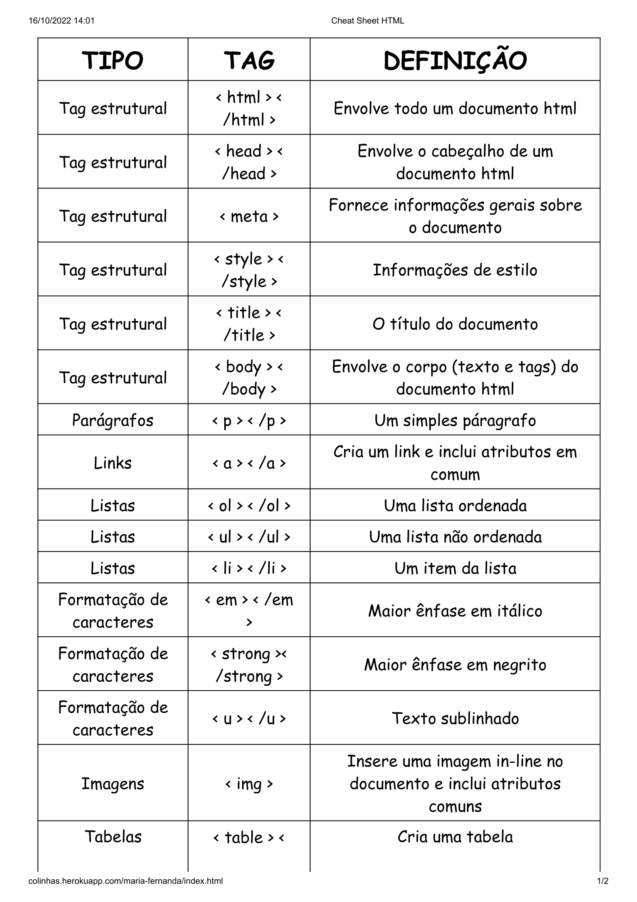
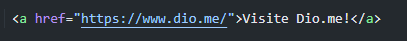

O Hypertext Markup Language (em português: Linguagem de Marcação de Hipertexto), é a linguagem que irá exibir a informação. Permite que os desenvolvedores desenhem como serão exibidos, pelo navegador, os elementos da página. Ou seja, ela dá significado1. Isso é importante por que alguns sistemas como o Google, que irão ler sua página, precisam entender o que é cada elemento nela e o que cada um desses elementos significam.
O VS Code (Visual Studio Code) será a ferramenta utilizada durante do curso. Para o dowload, é só clicar aqui.
Essa ferramenta é oferecida pelo navegador, vamos utilizar o Crhome; os navegadores como Safari, Edge ou Opera também disponibilizam essa ferramenta, que ajuda bastante no desenvolvimentos das páginas. Para ter o acesso basta selecionar o botão F12, o navegador abrirá uma nova janela onde te mostra diversas informações sobre como cada parte da Página foi criada e sua formatação(cor da fonte, tamanho da fonte e etc)
O documento HTML sempre inicia com o que chamamos de estrutura básica. Esta estrutura é quase que imutável. É aconselhável que você inicie seu HTML por esse código. Geralmente os editores como o Sublime Text já tem atalhos para iniciar os documentos HTMLs com essa estrutura, logo, você não precisa se preocupar em decorá-la, mas é bom que faça. Veja abaixo como ela se inicia:
Tags são o conjunto de caracteres que formam um elemento.
Existem dois tipos de Tags, as que necessitam de fechamento e as que não necessitam de fechamento.
Para as que necessitam de fechamento, utilizamos o sinal de menor ( < ), seguido do nome do elemento e o sinal de maior (> ) para abertura. Para fechamento, utilizamos o sinal de menor ( < ), seguido de barra ( / ), nome do elemento e o sinal de maior (> ).
Os elementos que não necessitam de fechamento, também conhecidos como elementos vazios, somente utilizamos o sinal de menor ( < ), seguido do nome do elemento e o sinal de maior (> ).
O documento HTML começa com a tag < html > e termina com a marca < /html >. Além disso, o documento contém um cabeçalho que descreve, por exemplo, o título da página (tag < head >) e um corpo no qual se encontra o conteúdo da página (tag < body >).
Além dessas, há uma infinidade de tags que nos auxiliam na hora de criar uma Página Web, exemplo de algumas na imagem abaixo:
Os elementos HTML < h1> - < h6> representam seis níveis de título de seção. Sendo < h1> o nível de seção mais alto e < h6> o mais baixo.
Exemplo: < h1> (observe o tamanho da fonte)
Exemplo: < h6> (observe o tamanho da fonte)
O elemento HTML < p> representa um parágrafo. No HTML,parágrafos são usados para agrupar conteúdos relacionados de qualquer tipo, como imagens e campos de um formulário.
O Elemento HTML < blockquote> indica que o texto incluído é uma longa citação.
O Elemento HTML < i> é apresentado com o uso do tipo "itálico".
O Elemento < u> é apresentado com o uso do tipo "sublinhado".
O Elemento < b> é apresentado com o uso do tipo "negrito".
Essa Tag nos permite criar listas de itens em ordem numérica ou sem ordem numérica.
O Elemento HTML < ul>, conhecido como Lista Desordenada, cria a lista de itens sem ordem rígida, isso é, uma coleção de itens que não trazem uma ordenaçao numérica e as suas posições, nessa lista, são irrelevantes.
Exemplo de Lista não Ordenada:
O Elemento HTML < ol>, conhecido como Lista Ordenada, cria uma lista de itens com ordem numérica.
Exemplo de Lista Ordenada:
Os links são encontrados em quase todas as páginas da web. Os links permitem que os usuários cliquem de uma página para outra.
A tag HTML < a> define um hiperlink. O atributo mais importante do elemento é o < href> atributo, que indica o destino do link. O texto do link é a parte que ficará visível para o leitor. Clicar no texto do link enviará o leitor para o endereço de URL especificado.
Exemplo:
